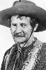

Country:United States, 62 minutes
Spoken languages:English
Genres:Action, Adventure
Director(s):Harry L. Fraser
Writer(s):Harry L. Fraser
Video Codec:Unknown
Number: 3087


Certification:NR
Storyline:
A white gorilla causes trouble in the deepest heart of Africa. The film uses footage from the silent 1927 serial Perils Of The Jungle.
Cast: 
Medium: Original DVD,
Comments: Part of: Horror Classics - 100 Movie Pack
Loaned: No
Aspect ratio: Unknown